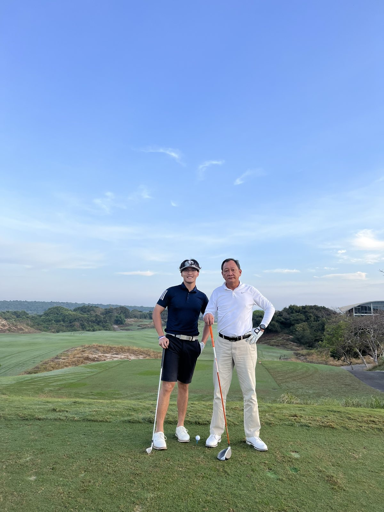
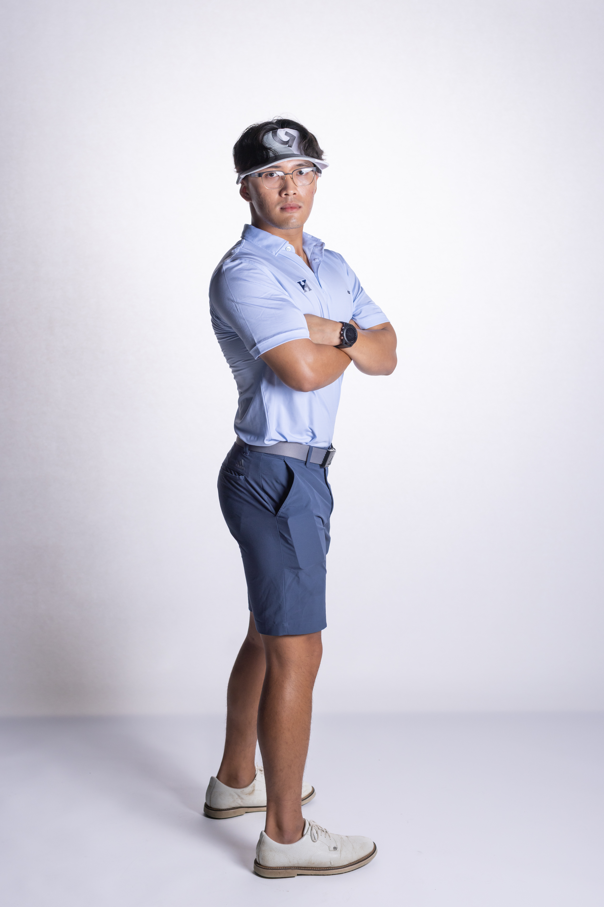
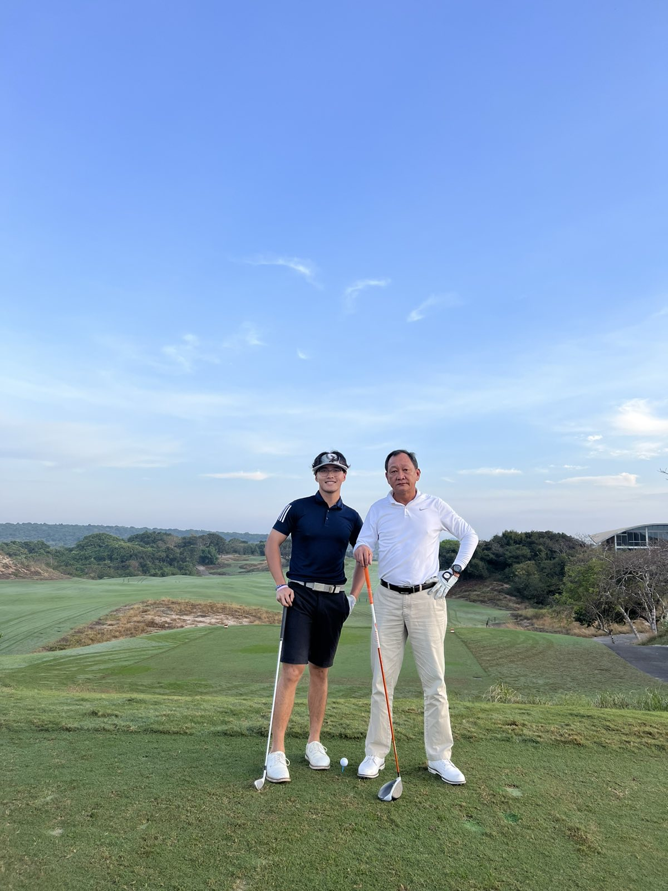
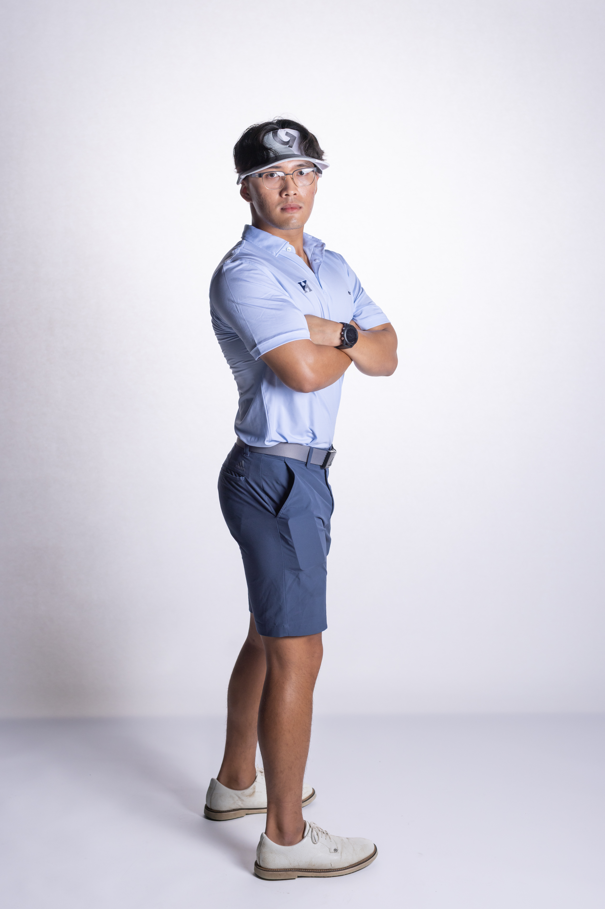

Powerlifting
I began powerlifting 3 years ago with only a goal to improve my physicality and health. I must admit it has become quite an obsession. Now there is no day that goes by that I do not visit BU Fitrec. Below are some memories I have made along the way.


Squash
I didn't know that this sport existed before attending The Hill School. However, since every student had to take up a sport and thanks to my wonderful roommate, Ethan, I tried squash for the first time in September 2019. Soon, I fell in love and squash became an obsession. My love for the sport propelled me into the #8 on Varsity during my Junior year.
What I love about squash is the fast-paced nature of the sport - I am always on my feet and anticipating my opponent's next move. It also gave me many lifetime friends who I call brothers.
Golf
My dad and I never thought we would pick up a golf club in our lives let alone play 3 rounds of golf in only 2 days. Nevertheless, it has become a passion (though we are not very skilled at it) and means for us to bond. I also joined the Varsity Golf team at The Hill School during my Sophomore year, of which I was a member for 3 years. Like squash, it has also given me many fond memories and long-lasting friendships.
What I love about squash is the fast-paced nature of the sport - I am always on my feet and anticipating my opponent's next move. It also gave me many lifetime friends who I call brothers.
 



Cooking
I will be quoting my MIT admissions essay here.
"I love cooking. It has evolved from a means to satisfy my appetite to a passion that has helped me fulfill my curiosity and build long-lasting relationships."
Books
Here are some of my favorite readings and my impressions of each of them.
Angela Duckworth's Grit
[Impression]
John D. Kelleher's Deep Learning
[Impression]
J.D. Salinger's Catcher In The Rye
[Impression]
F. Scott Fitzgerald's The Great Gatsby
[Impression]